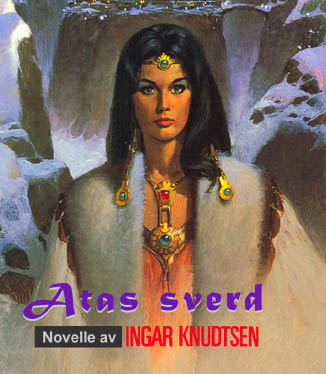

Introduksjon ved Ingar Knudtsen
Denne novella ble skrevet til Einar Gjærevolds antologi Asterveg i 1989. Mellom skrivinga av Rød måne og Løvinnens sjel – bare så det er sagt.
Men den ble beskåret her og der før jeg sendte den avgårde, og fikk også en annen tittel, nemlig “Sverdet”. Jeg regnet vel med at alle som da hadde lest Våpensøstrene likevel ville forstå hvilken by novellas jeg-person hadde funnet, og hvilket sverd det var som hjalp ham.
Jeg strøk også noen politiske setninger som syntes overflødige på det tidspunktet. Det syntes for eksempel litt upassende å snakke om islamske terrorister… I dag gjør det jo ikke det!
Her er novella i noe nær sin opprinnelige form:
Atas Sverd - Ingar Knudtsen

Jeg har alltid vært. fascinert av Sovjetunionen. Verdens største land. Så fullt av kontraster, av mysterier. Fra Ukrainas bjørkeskoger og steppenes uendelighet til Ural og Kaukasus’ mektige fjellkjeder. Fra tropisk klima og badeliv ved Svartehavet i sør til barskog og kald tundra i nord. Het ørkenvind. Nordlys over permafrost.
Og menneskene! Mer enn hundre folkeslag og språk. Ortodoks kirke, islam og kommunisme…
Det siste imperium. Folklore, eventyr og mørke myter. Almasti-mennesket i Pamirfjellene, legenden om den gylne kvinne Jumala i de sibirske myrland, den usynlige byen Kitezh, Tunguska-kometen, monsteret i Salak-Tsjeleksjøen, avsondrede landsbyer og glemte folkeslag.
Men jeg var en godt og vel moden mann før jeg la ut på tur til Sovjet. Og siden økonomien var skral ble det en skarve pakketur til Svartehavet og Kaukasus - med korte mellomlandinger i Leningrad og Moskva.
Reisefølget var vel verken verre eller bedre enn andre slike reisefølger. Gamle NKP-ere på pilgrimstur, nysgjerrige turister, til og med en reaksjonær type som ville reise til ‘det ondes imperium’ for å få bekreftet sine fordommer og bevare sitt hat til kommunismen!
Jeg så mye rart i “det nye” Sovjetunionen, men kommunisme så jeg ingen ting til. Bare et slitent folk som var desillusjonert av Store Ord og ideologiske plattheter som dekket over byråkratisk korrupsjon og smålighet. De hadde hatt en håpets revolusjon en gang for lenge, lenge siden, men den hadde spist sine barn og nå også sine barnebarn.
Jeg prøvde å diskutere med den reaksjonære, men han hadde liten sans for mine meninger og behandlet meg som om jeg var luft.
En ting alle i reisefølget utenom meg hadde til felles var trangen til sjø og strand og bading og soling. Mens jeg alltid har sett på det å plaske omkring i bølgene som noe jeg i alle fall ikke vil gjøre frivillig. Siste gang jeg gjorde det var da jeg falt ut av fiskebåten… heldigvis med redningsvest på. Heller ikke det å sole seg på stranda er noe for meg. Min drepende rastløshet forhindrer det.
Jeg var derfor snart ute på egen hånd, på små utflukter. Og jeg var etterhvert absolutt ikke lenger en del av fellesskapet. Tvert imot, ingen snakket lenger til meg, og jeg ikke til dem. Men jeg hadde ikke ment det. Mente slett ikke å misse bussen på tur langt inne blant fjellene på veien mellom Tbilisi og Jerevan.
Jeg skulle bare pisse. Gikk bak en bergnabb og inn blant noen busker - og fant ikke veien igjen. Kanskje hadde jeg satt meg ned ei stund. Duppet av mens fuglene kvitret omkring meg, og lufta kjentes både hjemlig og eksotisk på én gang. Eller mer sannsynlig hadde jeg falt og slått meg i svime, skjønt jeg kunne ikke kjenne noen kul i hodet.
Men det neste jeg helt sikkert husker er at det var mørkt. Natt. Med matt, månelys stjernehimmel og stjernebildet Deneb i senit. Jeg forsøkte å se på klokka, men det fordømte lyset i digitaluret nektet å virke. Det jeg tenkte på da var faktisk noe så prosaisk som at jeg nok burde ha slått til og byttet Taiwan ‘vidunderet’ med russeren som hadde bydd meg ZOMZ-kikkerten sin for den.
Månelyset krøp langsomt nedover fjellsidene og nådde meg endelig. Det var kaldt, uventet kaldt. Jeg frøs, og var glad for at månen gjorde det lyst nok til at jeg kunne bevege meg litt, begynne å lete etter veien.
Men den fant jeg fremdeles ikke.
Jeg kunne så levende forestille meg at bussen måtte ha kjørt videre, og ikke en eneste om bord ville merket at jeg ikke var med.
“Faen, helvete, fortære, forbanne”, remsa med bannord var lang, men besto naturligvis etter hvert mest av gjentakelser, og ble til slutt bare kjedelig og ganske så meningsløs.
Jeg virret omkring det meste av natta, snublet over steiner og greiner, syntes jeg hørte stemmer og lyder, ropte på hjelp, men ingen svarte. Til slutt krøp jeg utkjørt og hutrende sammen inne blant noen busker og forsøkte å sove. For første gang i mitt liv angret jeg på at jeg ikke røykte - for da ville jeg hatt fyrstikker eller lighter og kunne tent et bål.
Hadde jeg hatt et kongerike ville jeg gladelig der og da byttet det mot ei eneste eske fyrstikker!
I gryingen våknet jeg av at tennene skranglet i munnen på meg. Jeg hadde båret det lite smigrende tilnavnet ‘Frysepinn’ da jeg var guttunge, og tok vanligvis aldri av meg genseren før gradestokken beveget seg opp mot tjue-tjuefem grader. Kanskje ikke da engang. Men i går hadde jeg tatt av meg genseren. Lagt den fra meg i bussen. Det hadde jo vært bortimot trettifem varmegrader! Men nå måtte det da være mindre enn ti?
Heldigvis lysnet det raskt. Jeg så meg om, men synet ga meg ingen trøst. Jeg var i en dal med høye fjell på alle kanter, hørte ei elv et eller annet sted og gikk etter lyden. Fant jeg den kunne jeg følge den ned til kysten.
Men hjertet sank i meg da jeg kom til elva. Den forsvant nedover mellom overhengende knauser og med kratt som strakte seg ut over breddene. Det var enklere å følge den oppover enn nedover. Ja, jeg kunne plutselig ane at det hadde gått en sti her en gang… og det ga meg en merkelig uhyggesfølelse.
I natt hadde jeg ønsket mer enn noe annet å treffe folk, men nå så jeg plutselig for meg ville røvere med skjegg og turban på hodet komme ridende langs elvebreddene med svære, krumme sverd og flintlåsgevær.
“Tulling!”
Et par kaiefugler ble skremt opp fra et tre like ved, og fløy skrattende bort med noe jeg syntes lød som hese imitasjoner av den rustne stemmen min.
Jeg drakk vann fra elva. Lufta ble langsomt varmet opp av morgensola, og livet kjentes plutselig ikke så verst igjen.
Jeg fortsatte oppover og ble mer og mer sikker på at her hadde tusener av føtter gått før meg. Jeg sa til meg sjøl at rundt neste elvesving ville jeg sikkert finne en vei, en landsby, en jernbane - et eller annet.
Men sola forsvant bak fjellene uten at noe skjedde. Jeg kjente meg ganske motløs nå. Noen halvmodne bær var alt jeg hadde funnet å spise. Jeg var sulten, oppgitt og utkjørt.
Jeg gledet meg slett ikke til en reprise av natta før. Men det samme skjedde; det ble kaldt, og kulden tvang meg til å gå. Til jeg sovnet med hodet på en stein under stjernene.
Søvnen var full av uklare drømmer. Hester, våpen og blod. Stemmer som snakket til meg, hender som berørte meg. Sola skinte i ansiktet mitt da jeg endelig våknet.
I løpet av denne dagen fikk jeg grunn til å være takknemlig for hjemlige turer i skog og mark. Jeg var i noenlunde god form, hadde brukbare sko på meg og var vant til å gå. Men terrenget ble bare villere og villere, og nå angret jeg på at jeg ikke heller hadde forsøkt å følge elva nedover likevel. Men bare tanken på å snu og gå tilbake samme vei virket helt uutholdelig. Trassig fortsatte jeg videre.
Dalen smalnet.
Jeg gikk til slutt langs ei hylle med berg hengende over meg og elva fossende like ved. Og bråstoppet.
Foran meg videt dalen seg ut i ei stor gryte omkranset av fjell. Det måtte ha gått utallige ras her, for over alt lå det store og små steinblokker. Bekker kastet seg utfor bergsidene høyt der oppe og pekte med smale, sølvhvite vannfingre ned mot et blinkende vann som var utspringet for elva jeg hadde fulgt.
Jeg glippet med øynene mot synet. Og så ikke straks det som virkelig var det oppsiktsvekkende og fantastiske: En ruinby som nesten til forveksling liknet på amerikanske pueblos, hus gravd rett inn i fjellsiden. Noen få av dem var så hele at de fremdeles gapte mot meg med svarte dører og vinduer.
Hjertet dunket så hardt i brystet på meg der jeg stod at det kjentes som om noen slo på meg med en hammer. Nølende gikk jeg fram mot byen.
Inne blant de overgrodde ruinene fantes det ingen spor etter eventuelle beboere. Jeg kom snart fram til den intelligente konklusjon at det måtte være ufattelig lenge siden denne byen hadde vært bebodd.
Og likevel… bak hver ny ruin, fra hvert eneste mørke hull ventet jeg at noen skulle komme. At hender skulle strekkes ut etter meg og dra meg inn.
Det varte lenge før jeg virkelig våget meg inn i en av de noenlunde hele bygningene. Et stort hull i taket slapp lys inn, men innenfor var det likevel så mørkt at øynene måtte venne seg til det før jeg kunne se noe som helst.
Og det jeg så var vegger og en ny døråpning som førte til et nytt rom innenfor. Forøvrig var værelset tomt. Jeg våget meg ikke inn i det neste rommet, men forsøkte i stedet huset ved siden av.
Her fant jeg ei sprukken steinkrukke, men ingen ting annet. Det var i neste bygning igjen at den store overraskelsen befant seg.
Innenfor døråpningen åpenbarte det seg et stort, luftig rom med dører inn til andre rom. En av åpningene var ikke som de andre. Ikke et svart hull. Rommet innenfor var opplyst av et flakkende, blålig lys som strakte ei skimrende tunge av lys bortover golvet og fram mot føttene mine.
Som hypnotisert gikk jeg framover mot lyset. Inn gjennom døra.
Der inne stod et steinalter, og opp fra et hull i steinen brant en flamme. Klar og blå. Bak alteret kikket en skikkelse ned på meg. Et steinrelieff av en fryktinngytende, mangearmet figur som ikke bar tegn til elde, og som like godt kunne vært hogd ut dagen før.
Jeg ville springe ut, vekk, bort; men beina nektet å lystre.
I stedet ség jeg ned på kne. Det var en kvinnefigur med åtte armer. I seks av dem holdt hun et våpen. Økser, sverd, kniver. I den sjuende holdt hun et avkappet hode. Den åttende var tom.
Men bedre er jeg ikke enn at da jeg endelig greide å tvinge bort den tåka av skrekk og undring som tvang meg i kne, så meldte grådigheten seg. Øynene flakket bortetter på jakt etter et eller annet; noe av verdi, gull, juveler.
“Hm. Du har nok sett for mange dårlige amerikanske eventyrfilmer,” mumlet jeg bebreidende for meg sjøl.
Omtrent i samme øyeblikk som jeg virkelig fant noe.
Et avlangt skrin ved siden av alteret.
Jeg kravlet borttil og kostet bort støvet.
Det gikk lett å få det opp. Noe blinket, men det var verken gull eller edle steiner.
Det lå et sverd nede i eska. Et sverd med smal, krum klinge og et svart, matt skjefte med plass til to hender. Det så så skarpt og farlig ut at fingrene mine nølte med å berøre det. Jeg gløttet opp på figuren på veggen og syntes at hun blunket underfundig til meg.
Rystet smekket jeg lokket på igjen og løftet eska. Jeg så opp igjen som for å få en slags velsignelse. At jeg kunne ta den med meg ut. Men ansiktet syntes å håne meg nå. Utfordre meg.
Jeg rygget ut. Fant veien ut i dagslyset. På kne i sanden utenfor åpnet jeg igjen eska. Og igjen stanset fingrene mine av seg selv før de berørte sverdet. Det var vakkert og uhyggelig på samme tid. I likhet med veggrelieffet bar verken sverdet eller eska det lå i noe som helst preg av elde.
Det var som om noen skulle ha pusset det skinnende blankt for en time siden eller så, og lagt det ned i den avlange eska. Jeg. ble sittende lenge i sanden og bare stirre på sverdet. Ganske klar over at jeg betraktet en helligdom.
Langsomt la jeg på lokket og bar det inn igjen. Inn i rommet med Gudinnebildet og alteret med den evige blå flammen. Jeg la det forsiktig der jeg hadde funnet det, og vendte meg mot Gudinna på veggen.
“Jeg mente ikke å gjøre noe galt,” sa jeg høyt. “Tilgi meg.”
I et lite sekund kunne jeg sverget på at hun på veggen smilte til meg, men det var sjølsagt innbilning. Det flakkende, blålige lyset fikk liksom alt til å leve her inne.
Den natta tilbrakte jeg der ved den blå flammen, liggende på sanden under Gudinnebildet. Og om drømmene mine hadde vært, underlige natta før, så var de enda merkeligere nå.
Så livaktig at jeg kunne ha sverget på at det var virkelig, så jeg ei mørkhåret, ung kvinne kledd i skinn og lær komme inn. Hun gikk rett bort til eska med sverdet, åpnet den og tok sverdet. Med det i hånden gikk hun ut av døra og ble borte.
I drømmen krøp jeg bort til eska og forsikret meg om at sverdet virkelig var borte. Jeg drømte at jeg førte hånden opp til øynene for å kjenne etter om de var åpne eller lukket. De var åpne.
Det minte meg om et mareritt jeg hadde hatt som guttunge - jeg drømte at jeg drømte at jeg var blind. Og så drømte jeg at jeg våknet, åpnet øynene og ikke kunne se!
Kvinnen kom inn igjen og la sverdet tilbake. Hendene og klærne hennes var nå oversprøytet med blod. Idet hun skulle gå igjen snudde hun seg mot meg.
“Ingen mann må røre sverdet mitt,” sa hun. “Den som gjør det vil dø.”
Så var hun borte. Jeg hørte noen skrike, og våknet brått. Skriket var mitt eget. Et marerittskrik. Jeg hadde ofte mareritt som endte slik. Og jeg våknet alltid av skriket.
Var det en drøm? Det hadde vært så virkelig. Men i støvlaget omkring alteret var det bare spor etter mine egne føtter.
- Sjølsagt var det bare en drøm, din tosk. Dama snakket jo norsk!
Og likevel…
Jeg ble liggende og stirre opp i taket. Betraktet flammespillet mot de mørke steinene. Våget liksom ikke ennå å møte blikket til Gudinna på veggen. Men da jeg gjorde det fant jeg ingenting levende i steinøynene. Besluttsomt gikk jeg bort til eska og åpnet den enda en gang.
Sverdet lå der som før.
Denne gangen var skriket mitt ekte. Det rullet gjennom steindørene, kastet ekko mellom gamle vegger. Sverdet var dryppende vått av rødt, dampende ferskt blod…
Jeg stod utenfor i morgenlyset før jeg nesten visste ordet av det. Jeg sprang gjennom ruinbyen. Bort! Bort herfra! Jeg snublet, var oppe igjen i samme sekund. Sprang over de glatte steinene under klippeframspringet, løp til pusten gikk i pesende hiv og jeg ikke greide å løpe en eneste meter til. Ramlet overende og ble liggende med ansiktet ned i bakken. Lå der og forsøkte å tenke, forstå hva som hadde skjedd.
Noen lo over meg. En grov, kneggende latter.
Jeg løftet ansiktet fra bakken og så beina på en hest. Flere hester. Rytterne så ut som de var hentet fra ei eller annen fjern fortid. De kunne vært jegere. Men jegere er vanligvis ikke bevæpnet med AK47 automatgevær.
Anføreren var en svær kar med svart skjegg som kikket tilsynelatende vennlig ned på meg og sa et eller annet på et språk jeg ikke forstod.
“Ja nje ponemaje, vy gavorile po-russkij?” prøvde jeg meg.
Han svarte på et så dårlig russisk at jeg forstod at dette sannelig ikke skulle bli lett. Men med fakter og ord prøvde jeg å forklare at jeg tilhørte et reiseselskap og hadde gått meg bort.
På mitt spørsmål om hvem de var fikk jeg et svar som jeg ikke skjønte et dugg av, og jeg fikk en beklemmende følelse av at de ikke hadde ment at jeg skulle forstå noe heller.
Tilsynelatende virket de vennligsinnede nok. De slo leir og delte maten sin med meg. Humøret mitt steg betraktelig, men sank igjen da det tilsynelatende var helt umulig å få dem til å forstå at jeg ønsket de skulle føre meg til nærmeste by eller landsby, og at jeg var villig til å betale dem for det.
Mens vi satt slik og jeg gestikulerte og pratet, grep plutselig en av mennene tak rundt håndleddet mitt og betraktet klokka mi. Han så misbilligende på hånden min, grep tak i den andre også, sa noe til de andre mennene som fikk dem til å le.
Jeg presset fram et smil, og prøvde å vri meg løs på en måte som han ikke ville ta fornærmende opp. Hans slapp, og så snerret. han på sitt haltende russisk:
“Vy ruka dzensjina.”
Jeg så på hendene mine. Joda, jeg hadde det man godt kunne kalle for en kvinnes hender. Eller kunstnerhender, som min mor hadde foretrukket å kalle dem. Smale med lange fingre. Jeg var faktisk litt stolt av dem. Men det var vel tvilsomt om disse mennene delte mitt kvinnesyn.
Den neste timen begynte jeg å like situasjonen dårligere og dårligere. Blikkene de sende meg ble stadig mer truende. Brått forsto ingen av dem ett eneste ord russisk.
Instinktene mine formelig skrek at dette var en bandittgjeng. Kanskje islamittiske terrorister. På flukt fra politiet eller KGB. Men hvis de ville kverke meg for ei klokke, noen klær, en gullring og lommebokas assorterte innhold av småpenger og diverse papirer så kunne de nå heller få hele greia.
Jeg tok av meg klokka og ville gi den til ham som hadde tatt hendene mine, men hva det nå enn var for slags æresbegreper disse folka opererte etter, så hadde de tydeligvis ikke noe ønske om å få noe som de ærlig og redelig skulle stjele! Hvis det da ikke bare var kristenmanns blod de luktet. Jeg kunne jo fortalt dem at jeg slett ikke var kristen, men hadde ingen særlig tro på at det ville hjelpe.
En av dem løftet kalashnikoven sin mot meg, og for andre gang på kort tid stakk jeg av i vill panikk. Skuddene suste rundt ørene på meg. Nede ved elva tok jeg av til venstre og sprang mot ruinbyen. Jeg ante mer enn så at røverne kastet seg på hestene og kom sprengende etter. Skrekken gav meg vinger, jeg løp i sikksakk til jeg nådde berghylla, sprang sammenkrøket mellom steinblokkene, gjennom de smale gatene. Smatring fra et automatvåpen bakfra fikk meg til stupe på hodet inn gjennom den første og beste døråpningen.
Jeg så meg om. Ut fra en av dørene innenfor kom et blått skimmer av lys. Jeg var i forkammeret til alterrommet!
Utenfor hørte jeg forfølgernes rop. Jeg var en død mann. Men de syntes å betenke seg på å komme inn. Skjøt bare noen ufarlige skudd inn gjennom døråpningen.
Jeg gikk inn i tempelrommet. Gudinna på veggen så på meg.
Det samme uutgrunnelige blikket. Jeg tok et par forte steg fram mot eska med sverdet i. Åpnet den med skjelvende fingre.
Våpenet lå der, blankt og skinnende rent. Hva jeg enn hadde sett, var det ikke der nå. Fingrene mine strakte seg mot skjeftet. Jeg syntes jeg så kvinnen stå der og advarende si at ingen mann måtte røre sverdet. Samtidig hørte jeg den foraktelige stemmen til røveren:
“Du ha kvinnes hånd!”
Vel, hva hadde jeg å tape? Hånden lukket seg om skjeftet. Det var som det gikk et støt gjennom meg i det samme. Jeg løftet det. Hogg prøvende gjennom lufta. Kjente skrekken nesten overvelde meg. Dette var ikke metall, ikke tre, ikke lær. Dette var et levende, pulserende vesen.
Kraften som strømmet gjennom det og inn i meg fikk meg til å skrike høyt. Men det var et skrik i triumf. Jeg skimtet et skjeggete ansikt bak en løftet AK47. Men før fingeren fikk krummet seg om avtrekkeren hogg sverdet våpenet hans tvers av! Forbauset skrekk lyste fremdeles i øynene til røveren da hodet hans trillet bortover golvet.
Kampen var over nesten før den hadde begynt.
Jeg la meg på kne foran alteret, og la det bloddryppende sverdet forsiktig ned i eska igjen.
Denne gangen var jeg helt sikker:
Gudinna på veggen smilte virkelig til meg.
* * *
Det er fem år siden dette hendte. Jeg fant fram til en landsby til slutt, til vennligsinnede folk, og greide til og med å spore opp reisefølget mitt. Jeg fortalte ikke noe om det som hadde skjedd. Hvem ville vel trodd meg?
I fjor var jeg tilbake i Kaukasus for om mulig å finne igjen den skjulte dalen og ruinbyen. Uten resultat. Men jeg har fått høre legendene om et folk av kvinnekrigere som skal ha levd i disse traktene for uminnelige tider siden.
Og jeg vet at jeg ikke har fantasert det hele. Sverdet finnes, og med det en drøm som noen kanskje en dag vil gjøre sann.
Amasonenes tid kan komme tilbake.
— * —